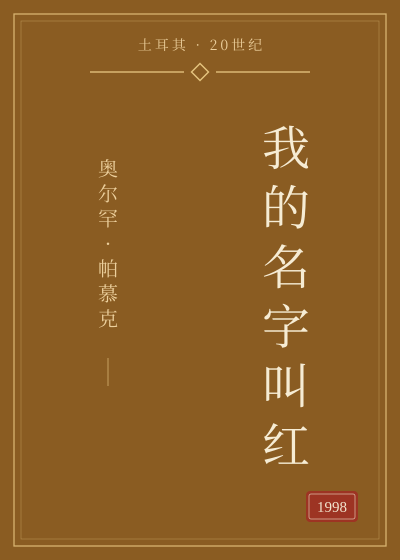
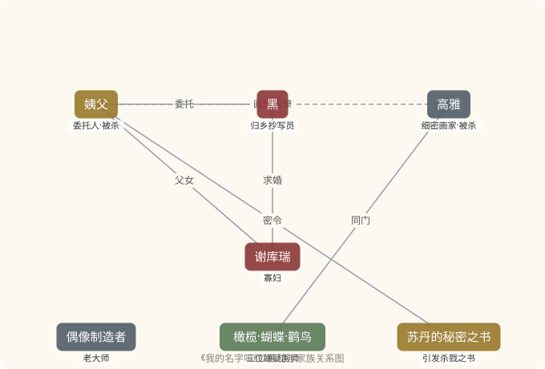

我的名字叫红
一、基本信息
| 作者 | 帕慕克 |
|---|---|
| 成书/出版 | 1998年出版（Britannica） Orhan Pamuk — Encyclopaedia Britannica（百科全书） |
| 国别/地区 | 土耳其 |
| 时代 | 现当代 · 20世纪 |
| 体裁 | 长篇小说（历史侦探小说） |
| 语言 | 土耳其语 |

《我的名字叫红》画坊与家族关系图（人物关系图）
二、创作背景
题材背景：16世纪奥斯曼帝国苏丹委任的'秘密之书'细密画工程——参与画家之一被杀；'东西方绘画之争'（法兰克风格透视 vs 细密画传统）是全书的哲学骨架（通说）。
历史底本：1580年代奥斯曼细密画中的真实事件（'宴乐图'渎神传闻——通说待核）与《Zenhârnâme》等文献（通说待核）。
出版与荣誉：1998年出版，2003年国际IMPAC都柏林文学奖（通说待核）；英译 Erdağ Göknar（2001，通说待核）。
三、内容脉络
谋杀：1591年伊斯坦布尔，皇家细密画家高雅被杀，尸体被投井——第一人称'自白'竟来自死者（'我叫高雅……'——结构）；凶手是谁？三位候选画师（蝴蝶、鹳鸟、橄榄）各有叙事视角。
双线：黑（Black，远归的表哥）受托绘制'秘密之书'并追求寡妇谢库瑞（Shekure，书的委托人恩尼什特的儿媳——通说细节）；谢库瑞的信件视角（给父亲的'书'——通说待核）；警方（宫廷卫队）与画坊的'调查'。
哲学线：细密画大师（偶像制作者）与'法兰克风格'的对立——'风格'与'签名'之辩；金色画的诱惑（通说待核）。
结局：凶手'橄榄'被揭——第二人称'你们'的凶手自白章（'我是凶手……'——通说细节）；黑与谢库瑞成婚；'秘密之书'被焚毁或藏匿（结局多义——通说待核）。
四、主要人物表
| 人物 | 身份 | 说明 |
|---|---|---|
| 黑（Black） | 归乡的抄写员 | '局外人'视角：为爱而卷入画坊阴谋 |
| 谢库瑞 | 寡妇 | '信件'视角：在父权与婚姻中的机敏周旋 |
| 橄榄/蝴蝶/鹳鸟 | 三位细密画家 | 每章以一人视角叙事——'凶手在三人中' |
| 姨父（恩尼什特） | 委托人 | 西方化'秘密之书'的策划者，也被杀（通说） |
| 偶像制造者 | 老画坊大师 | '风格'哲学的讲述者 |
| 金色（+金色、红色等） | 颜色自述 | 整章以'红色'第一人称谈颜色史——形式奇观（通说） |
五、主题与艺术特点
- '看'的战争：透视法 vs 平面细密画——东西方艺术哲学的侦探化（通说）。
- 叙事的多声部：死者、凶手、颜色、硬币、树都开口——视角实验（通说）。
- 传统的暴力：为'传统'杀人 vs 为'创新'杀人——Pamuk 的自我质询（通说）。
- 艺术特点：59章多视角、颜色自述章、'东方侦探小说'的混文体（Britannica：brought international fame 白色城堡之后）。
六、影响与评论
- Britannica（Pamuk 条目）：My Name Is Red (1998) 列于其 major works；2006诺贝尔。
Orhan Pamuk — Encyclopaedia Britannica（百科全书） - Britannica：东西方张力主题（Britannica：the tension between Eastern and Western influences）——本书为核心文本。
Orhan Pamuk — Encyclopaedia Britannica（百科全书） - 中译：沈志明译《我的名字叫红》（上海人民出版社，通说待核）。
Orhan Pamuk — Encyclopaedia Britannica（百科全书）
七、阅读建议
难点
- 多视角+土耳其人名（黑/谢库瑞/橄榄）——先列'谁在说话'表。
- 细密画知识（奥斯曼/波斯画派）需要注释。
- 章节切换频繁（59章）——按'说话者'分类阅读。
- 沈志明译《我的名字叫红》（上海人民出版社，通说待核）：通行本。
- 英译：Erdağ Göknar（2001，通说待核）。
通读 → 精读'红色'自述章与凶手自白章 → 对照细密画图像资料（Topkapi 博物馆——通说待核）→ 讨论'风格与签名'之辩。
八、待核实
- 1998年出版（İletişim 出版社说，通称）细节待核。
- 历史底本（1580年代画坊事件）考订待核。
- 沈志明/何佩桦译本信息待核。
- IMPAC 都柏林奖（2003）确认待核。
本页主要来源
帕慕克的其他收录作品：我的名字叫红